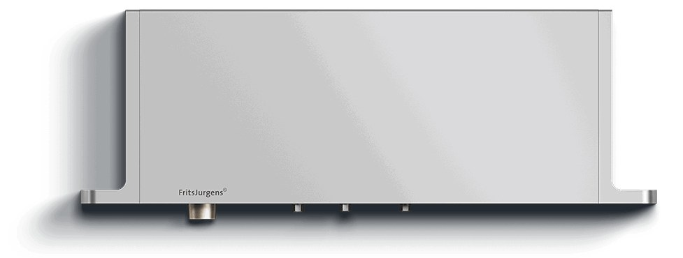

Регулируемый контроль каждой фазы движения двери; механизм полностью скрыт внутри полотна.
| Damper Control | мягкое закрывание; торможение на 70° защищает стену |
| 30° Speed Control | скорость закрывания на последних 30° |
| Latch Control | доводка в защёлку или замок |
| Фиксация | 0°, 90° и −90°, двустороннее открывание |